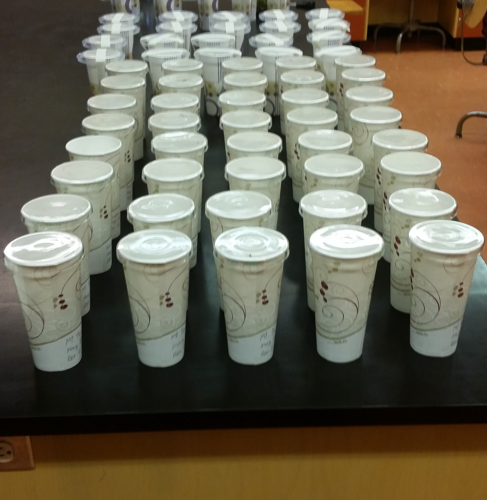

Research
PhD (University of Guelph)
Montane beetle diversity and elevation across the globe: is there a common distribution pattern?
Ant thermal tolerance along a field-forest gradient in Guelph, Ontario
MSc (Dalhousie Universtiy)
For my MSc thesis, I studied the ecology of ground beetles (Carabidae) in lowbush blueberry fields, from individual feeding behaviours and movement, to genus-level community analyses. Ground beetles are known for being beneficial insects in lowbush blueberry fields, where they feed on both weed seeds and on the larvae of some insect pests. In 2012, researchers found over 50 species of ground beetle that range from herbivores to carnivores within blueberry fields and described some of their community distribution within their fields of study. My chapters expand on some of that work and tackled different questions relating to some of the most abundant carabid species in lowbush blueberry fields!
Carabid diversity across space and time, and the dispersal ability of Harpalus rufipes
That being said, there was still so much to explore! For instance, the fields in the 2012 study were relatively small, which begged the question of whether the community distribution trends they observed would also be seen in larger fields. Therefore, we designed one of my chapters to explore this very question, and we found that carabid abundance increased with distance from the field edge, but that their genus richness (number of genera) did not change. Our study was published by Oxford University Press in the journal Environmental Entomology, and you can find it here.
Feeding behaviours of two abundant early spring carabid species
Lowbush blueberry fields tend to be managed in a two-year cycle, where in one year the field is in vegetative growth (locally called a sprout field) and in the other it is in fruit-bearing mode (called a crop field). At the end of the crop year, growers mow the field down to the ground to begin the cycle anew. In sprout fields, there tends to be a large amount of weed seeds on the ground from the previous year, many of which can germinate. At the same time, there is an abundance of two very common carabid species, Poecilus lucublandus and Pterostichus mutus, both of which are generally known as carnivores, with some rare reports of them eating seeds. The natural question that followed these observations was: are the beetles there in such high numbers because they are consuming the weed seeds? Our experiments showed that they are very likely not there to eat those seeds, and the reasons why they appear in such abundance in sprout fields are still a mystery. Our study was published by Oxford University Press in the Journal of Insect Science and you can find it here.
A method to measure terrestrial arthropod movement in the laboratory, in the dark

During a “directed studies” course, where we are expected to develop a research project on our own and present it at the end of term, I studied how light affected the movements of the carabid beetle Harpalus rufipes, the most common species in lowbush blueberry fields. I did not have access to infra-red cameras nor any fancy equipment, and I needed to come up with a way to measure the effects of different light treatments (including no light at all) with the things I had at hand. After much trial and error, I used a table with black tarp as the floor of the arena where the beetles would move, a plexiglass circular wall to fence them in, sand as the surface in which they would walk, and equidistant lines of fluorescent powder, which they would drag around as they walked pass these lines of powder, leaving behind a fluorescent footprint of their movements on the sand. We then photographed these arenas and quantified movement patterns of these beetles under the influence of different light treatments in a very affordable manner, especially considering that we quantified movements in the dark without infra-red cameras! Our study was published by Cambridge University Press in The Canadian Entomologist and you can find it here.
BSc (Dalhousie University)

For my undergraduate thesis project, I studied the blueberry spanworm (Itame argillacearia) parasitoid populations in Nova Scotia lowbush blueberry fields. Spanworm outbreaks are a well-known source of stress and income loss to growers, but they happen in not-so-predictable patterns, and the reasons why the spanworm population numbers stay low (sometimes years at a time) are not very clear. In 2015, researchers at Dalhousie University found that the blueberry spanworm populations from two commercial blueberry fields in 2012 had parasitism rates of around 50-60%! So to expand on these findings, we sampled 15 fields, 8 of which had enough bluebery spanworm larvae for us to collect and bring back to the lab. We found that around 22% of the spanpworm larvae were parasitized either by wasps of the family Ichneumonidae or flies of the family Tachinidae, which is lower than what was reported in the 2015 study, but explainable due to the fact that we had larvae from many more different sites. Our study was published by the Acadian Entomological Society in the Journal of the Acadian Entomological Society, and you can find it here.
Partnerships
I maintain active partnerships with researchers at the Dalhousie Agricultural Campus (Nova Scotia, Canada), and at the State University of Minas Gerais (Universidade do Estado de Minas Gerais, UEMG), Brazil, where I am involved in agricultural entomology/ecology projects and some theoretical work.